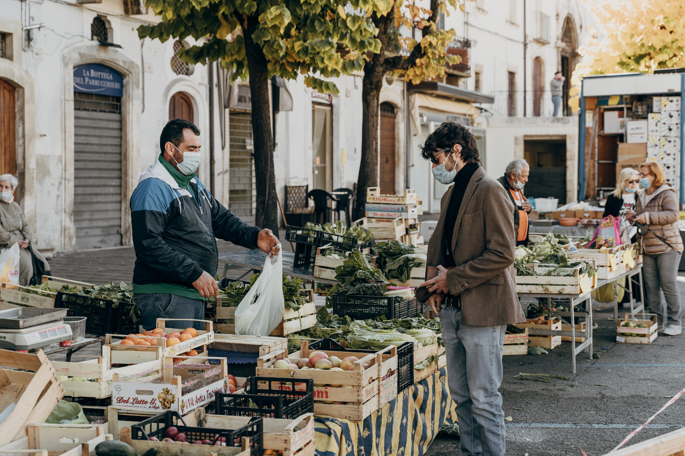

A freindly exhange between vendor and customerBustling streets of Rome are filled during COVIDA lone customer hurries down the market to return homeLove is in the air in the Roman maketsTwo friends snap a selfie as they enjoy the market togetherA once vibrant market left in complete silence because of COVIDThe restless wait that is waiting for a customerA bold reminder